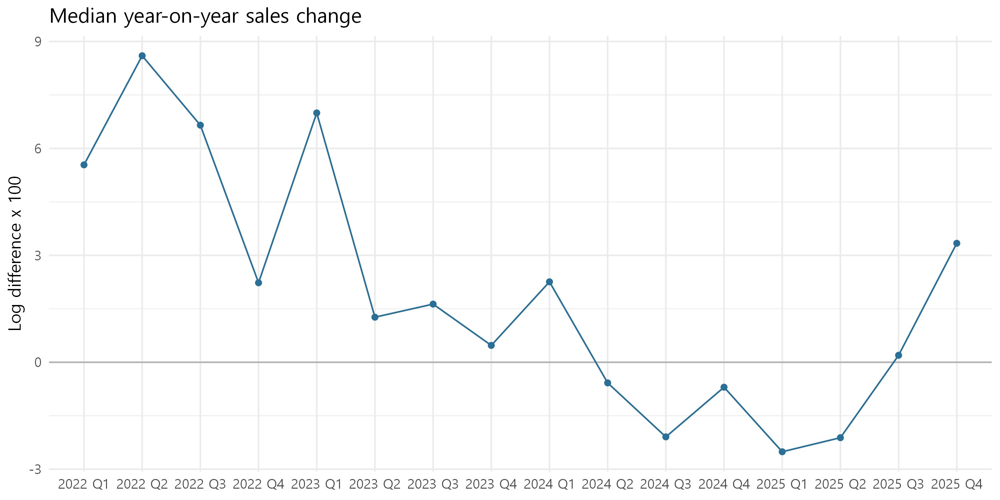
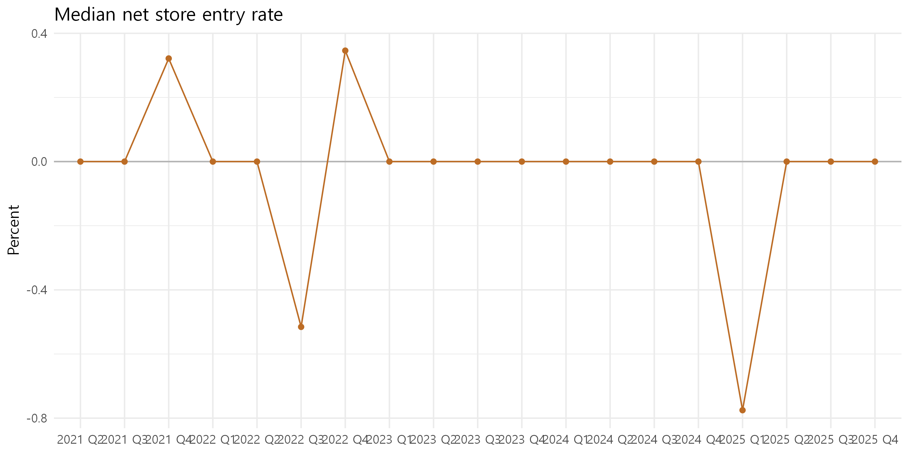
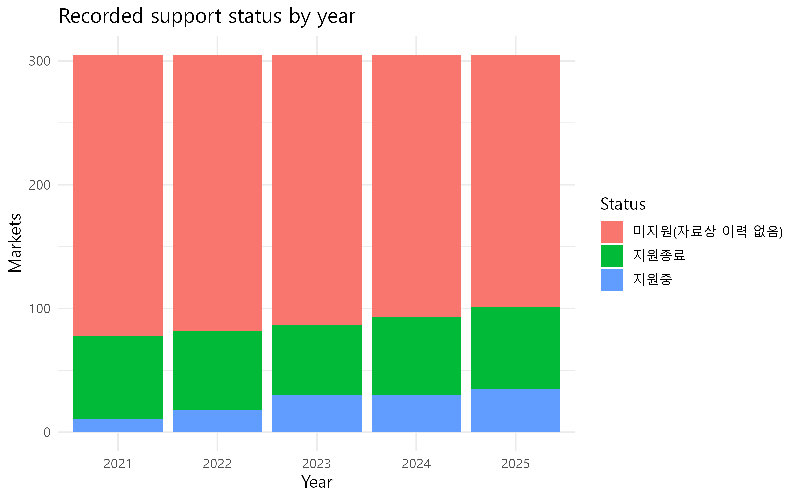
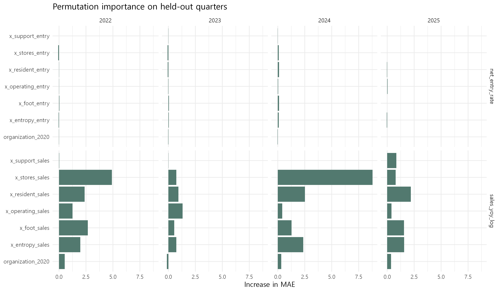

flowchart LR A[시장·분기 패널] --> B[결과와 선행 특성 구성] B --> C[기술통계] B --> D[FE · CRE] B --> E[연도별 랜덤포레스트] D --> F[강건성 · 조정 모형] E --> G[예측 성능 · 변수 중요도]
서울시 전통시장 연구: 파일럿 분석
2021–2025년 패널 구축·설명·예측 결과 한눈에 보기
경고파일럿 결과의 해석 범위
이 보고서는 연구모형의 실행 가능성과 자료의 한계를 점검합니다. 계수와 예측 중요도는 인과효과가 아닙니다. 매출 원천 열의 집계기간, 업종 코드, 지원사업 명단의 포괄성을 확인한 뒤 논문 분석을 확정해야 합니다.
핵심 현황
노트분석 규모
305개 시장 · 6100개 시장–분기
2021년 1분기부터 2025년 4분기까지
노트2020년 상인조직
있음 154 · 없음 18 · 미확인 133개 시장
CRE 분석에서 표본 제한에 유의
노트경제지표와 지원 상태
매출 변화 계산 가능 4453행
2025년 지원기간상 지원중 35개 시장
분석 흐름
1. 자료와 변수
panel_data_21-25.csv는 시장 코드와 분기 코드가 유일한 305개 시장의 균형 패널입니다. 매출 변화는 전년 동기 로그 차이, 점포 순진입률은 당기 개업·폐업의 차이를 전분기 점포 수로 나눈 값으로 구성했습니다. 시장의 업종 구성은 업종별 점포 비중의 Shannon 엔트로피로 요약했습니다. 매출 변화의 설명 특성은 4분기 전 값, 순진입률의 시장 특성은 전분기 값입니다. 연도별 지원 상태는 두 결과 모두 전년 동기 값을 사용했습니다.
| variable | missing_n | missing_pct |
|---|---|---|
| sales_yoy_log | 1647 | 27.0 |
| net_entry_rate | 305 | 5.0 |
| industry_entropy | 0 | 0.0 |
| organization_presence_2020_0_1 | 2660 | 43.6 |
| support_active_0_1 | 0 | 0.0 |
노트결측의 의미
2021년 매출 전년 동기 변화는 2020년 비교값이 현재 패널에 없어 계산하지 않습니다. 상인조직 미확인 시장은 조직이 없다는 뜻이 아닙니다. 지원중 변수의 0은 제공된 지원 현황 자료에서 해당 연도의 진행 중 사업이 확인되지 않았다는 뜻입니다.


2. 지원사업 상태
지원기간에 해당 연도가 포함되면 지원중, 진행 중인 사업 없이 과거 이력이 있으면 지원종료, 관찰된 이력이 없으면 미지원(자료상 이력 없음)으로 구분했습니다. 신청·포기 여부는 원자료에 없어 판정하지 않았습니다.

3. 시장 내부 변화와 시장 간 차이
시장·분기 고정효과(FE)는 같은 시장의 시간에 따른 변화를, 상관임의효과(CRE)는 시장별 평균과 2020년 조직 유무를 함께 고려합니다. 아래 표는 두 모형의 핵심 변수만 보여줍니다. 두 모형의 표본은 다릅니다. FE는 조직 유무가 미확인인 시장도 활용하고, CRE는 조직 유무가 확인된 시장만 활용합니다.
| result | model | variable | n | estimate | standard_error |
|---|---|---|---|---|---|
| 매출 변화 | FE | x_entropy_sales | 4304 | -1.198 | 25.738 |
| 매출 변화 | FE | x_support_sales | 4304 | -1.340 | 10.249 |
| 매출 변화 | CRE | x_entropy_sales | 2511 | 16.582 | 13.881 |
| 매출 변화 | CRE | x_support_sales | 2511 | 8.501 | 3.245 |
| 매출 변화 | CRE | organization_presence_2020_0_1 | 2511 | -5.891 | 5.518 |
| 순진입률 | FE | x_entropy_entry | 4696 | 3.230 | 3.192 |
| 순진입률 | FE | x_support_entry | 4696 | 0.112 | 0.154 |
| 순진입률 | CRE | x_entropy_entry | 2604 | 0.940 | 1.101 |
| 순진입률 | CRE | x_support_entry | 2604 | 0.174 | 0.278 |
| 순진입률 | CRE | organization_presence_2020_0_1 | 2604 | 0.624 | 0.254 |
힌트계수 읽는 법
FE 표준오차는 시장 단위로 군집화했습니다. CRE의 기본 표준오차는 혼합모형 가정에 의존하므로 FE와 동일한 추론 근거로 취급하지 않습니다. organization_presence_2020_0_1은 기간 중 변하지 않아 FE에서는 단독 계수를 추정할 수 없습니다.
4. 연도별 예측 성능
각 연도의 1·2분기를 학습, 3분기를 검증, 4분기를 최종 평가에 사용했습니다. 한 해의 앞선 두 분기만 학습하므로 성능과 중요도는 탐색적 파일럿 결과입니다. 회귀모형은 학습자료 평균 예측과, 분류모형은 학습자료 최빈 유형 예측과 비교합니다.
| outcome | year | n | mae | rmse | mean_baseline_mae | better_than_baseline |
|---|---|---|---|---|---|---|
| 매출 변화 | 2022 | 279 | 21.94 | 42.09 | 23.44 | 예 |
| 매출 변화 | 2023 | 279 | 22.49 | 41.57 | 22.07 | 아니오 |
| 매출 변화 | 2024 | 276 | 17.55 | 31.26 | 16.90 | 아니오 |
| 매출 변화 | 2025 | 278 | 23.36 | 45.15 | 25.15 | 예 |
| 순진입률 | 2022 | 305 | 2.25 | 3.72 | 2.14 | 아니오 |
| 순진입률 | 2023 | 305 | 2.21 | 4.22 | 1.83 | 아니오 |
| 순진입률 | 2024 | 305 | 2.29 | 4.16 | 1.65 | 아니오 |
| 순진입률 | 2025 | 305 | 1.84 | 3.03 | 1.76 | 아니오 |
MAE가 낮을수록 예측 오차가 작습니다. 단순 기준모형보다 성능이 낮은 해도 그대로 표시했습니다.
매출 변화와 순진입률의 부호를 조합한 네 유형을 분류합니다. 0이라는 기준은 분석 전에 고정한 기술적 구분이며, 회복 성공·실패의 확정적 분류가 아닙니다.
| year | n | accuracy | majority_baseline | better_than_baseline |
|---|---|---|---|---|
| 2022 | 279 | 0.416 | 0.419 | 아니오 |
| 2023 | 279 | 0.358 | 0.376 | 아니오 |
| 2024 | 276 | 0.312 | 0.250 | 예 |
| 2025 | 278 | 0.281 | 0.198 | 예 |
유형별 정밀도와 재현율은 results/04_classification_by_class.csv에서 확인할 수 있습니다.
무엇이 예측에 기여했는가
평가자료에서 한 변수의 값을 섞었을 때 MAE가 증가하는 정도를 변수 중요도로 표시합니다. 순위가 높아도 인과적 영향이 크다는 뜻은 아닙니다. 상관된 변수끼리는 중요도를 나누어 가질 수 있습니다.

5. 강건성과 조정 모형
로그 매출 변화와 일반 백분율 변화율, 순진입률과 개업·폐업률을 비교했습니다. 또한 2020년 상인조직 유무가 확인된 시장으로 표본을 제한한 결과를 별도로 저장했습니다. 다음 표의 계수는 결과변수의 단위가 서로 다르므로 크기를 직접 비교하지 않습니다.
| model | variable | n | estimate | standard_error |
|---|---|---|---|---|
| sales_log | x_entropy_sales | 4304 | -1.198 | 25.738 |
| sales_log | x_support_sales | 4304 | -1.340 | 10.249 |
| sales_percent | x_entropy_sales | 4304 | -71.044 | 98.470 |
| sales_percent | x_support_sales | 4304 | -13.413 | 20.498 |
| net_entry | x_entropy_entry | 4696 | 3.230 | 3.192 |
| net_entry | x_support_entry | 4696 | 0.112 | 0.154 |
| opening | x_entropy_entry | 4696 | 3.404 | 2.781 |
| opening | x_support_entry | 4696 | 0.006 | 0.141 |
| closure | x_entropy_entry | 4696 | 0.174 | 1.021 |
| closure | x_support_entry | 4696 | -0.106 | 0.115 |
| sales_known_org | x_entropy_sales | 2511 | 16.575 | 23.005 |
| sales_known_org | x_support_sales | 2511 | 8.527 | 5.117 |
| entry_known_org | x_entropy_entry | 2604 | 0.948 | 2.083 |
| entry_known_org | x_support_entry | 2604 | 0.171 | 0.143 |
이전 지원 이력을 추가한 조정 모형은 results/07_adjusted_sales.txt와 results/07_adjusted_entry.txt에 저장됩니다. 2020년 조직 없음 시장에는 전년도 지원중 사례가 없어 조직 유무 × 지원중 상호작용은 현재 자료로 추정하지 않습니다.
| organization_presence_2020_0_1 | x_support_sales | market_quarters |
|---|---|---|
| 0 | 0 | 288 |
| 1 | 0 | 2160 |
| 1 | 1 | 304 |
6. 파일럿에서 확인된 과제
- 자료 정의 확인: 매출 원천 열의 집계기간, 업종 코드의 의미와 시장 경계를 원자료 정의서에 대조해야 합니다.
- 조직 자료 보강: 2020년 조직 유무가 미확인인 시장을 추가 확인해야 CRE의 시장 간 비교가 안정됩니다.
- 지원사업 범위 확인: 0은 제공 파일에서 지원기간상 진행 중 기록이 없다는 의미입니다. 전체 선정·신청·포기 명단이 확보되면 상태를 다시 구성해야 합니다.
- 시기 구분 확정: 이 파일럿은 연도별 예측을 보여줍니다. 논문 본 분석의 코로나19 국면 경계는 외부 정책·사회적 근거로 분석 전에 확정해야 합니다.
- 예측 결과 해석: 랜덤포레스트가 단순 기준모형을 넘지 못한 결과도 보고하고, 변수 중요도를 정책효과로 읽지 않습니다.
분석 코드는 실행 안내에, 변수 정의는 코드북에 정리되어 있습니다. 분석 설계의 근거는 제3장 초안에 있습니다.